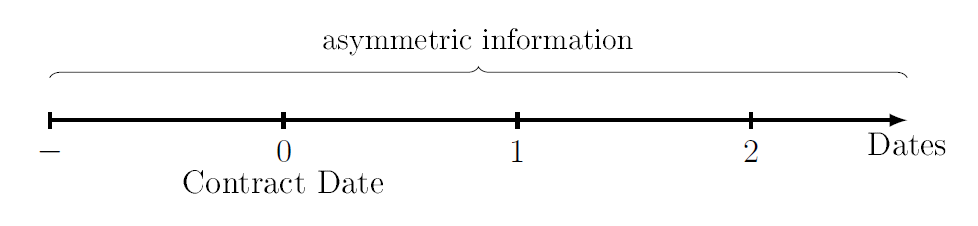
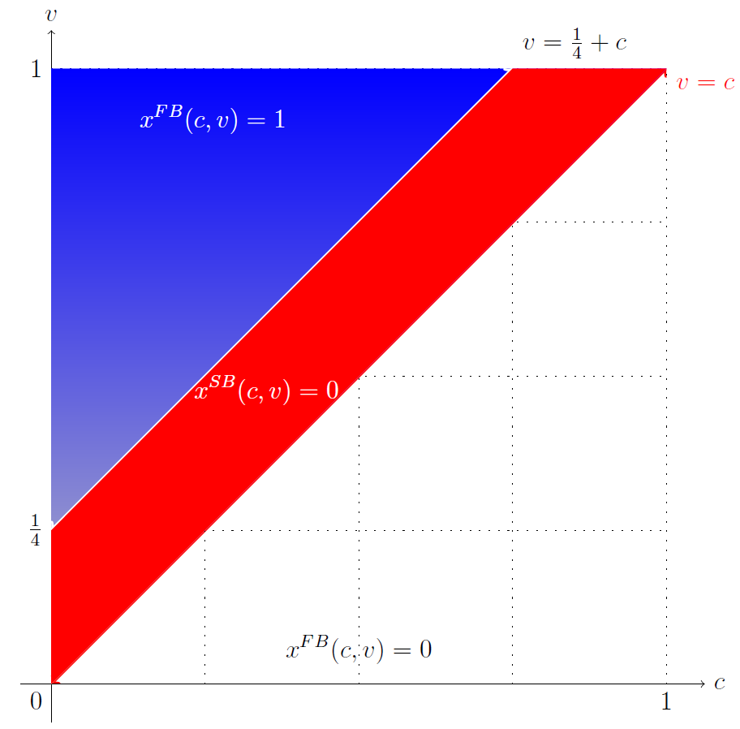

Adverse Selection

The parties are asymmetrically informed when the contract is written. The contract specifies the payment scheme.

This chapter covers two parts: a basic model with one-sided asymmetric information, and two-sided asymmetric information.
One-Sided Asymmetric Information
Still, there are two parties: Principal and agent. We can imagine principal as airline company and agent as aircraft manufacturer.
Timing
Date 0: Agent learns his type \(c\geq 0\), which is private information. This can be imagined as cost.
Date 1: Principal offers contract.
Date 2: Agent accepts or rejects. If the agent rejects, he gets \(0\) utility.
Date 3: Verifiable quantity \(x \geq0\) is chosen, payment \(t\) is made.
Principal's payoff: \(v(x)-t\)
Agent's payoff: \(t-cx\)
\(c\in\{c_l, c_h\}\) is a random variable, with \(c_h> c_l> 0\). The distribution is \(Pr\{c=c_l\}=p\). We further make the following assumption:
\(v\) is a concave function increasing in \(x\). The Inada conditions hold.
First Best Benchmark
We want to know the quantity that maximise the total surplus. Thus: $$x^{FB}(c)=\arg\max v(x)-cx$$
By FOC: $$v'(x^{FB}(c))=c$$
Note that \(x^{FB}(c_l)> x^{FB}(c_h)\), and this is in line with intuition.
Second Best
To get the optimal quantity under asymmetric information, we can only consider direct mechanism by revelation principle. The direct mechanism is that the agent reports his type, and principal chooses \(x\) and \(t\) accordingly. The proof of revelation principle can be found on various microeconomics or mechanism design textbooks.
So, assume the principal offers the following contract: $$x_l=x(c_l), \text{ } t_l=t(c_l)$$ $$x_h=x(c_h), \text{ } t_h=t(c_h)$$
The principal's problem is: $$\max_{x_l, x_h, t_l, t_h} \{p[v(x_l)-t_l]+(1-p)[v(x_h)-t_h]\}$$
subject to: $$t_l-x_lc_l\geq t_h-c_lx_h\tag{LIC}$$ $$t_h-x_hc_h\geq t_l-c_hx_l\tag{HIC}$$ $$t_l-x_lc_l\geq 0\tag{LP}$$ $$t_h-x_hc_h\geq 0\tag{HP}$$
First notice that \((LP)\) is redundant. Indeed, by \((LIC)\), \(c_H> c_l\) and \((HP)\): $$t_l-x_lc_l\geq t_h-c_lx_h\geq t_h-c_hx_h\geq 0$$
We first ignore \((HIC)\), then solve for the reduced problem. After that we will come back to check if the \((HIC)\) holds.
Look at remaining constraints, we can conclude that they are all binding: $$t_l-x_lc_l= t_h-c_lx_h\tag{LIC}$$ $$t_h-x_hc_h= 0\tag{HP}$$
Otherwise, if we decrease \(t_l\) or \(t_h\) by a little bit, the constraints will not be violated and the objective function can be increased.
By the two constraints, we can further substitute out the transfers and re-write the reduced problem as follows: $$\max_{x_l,x_h}p[v(x_l)-x_lc_l-x_h(c_h-c_l)]+(1-p)[v(x_h)-x_hc_h]$$
Solve by taking FOCs, first for \(x_l\): $$\Rightarrow v'(s_l^{SB})=c_l \Leftrightarrow x_l^{SB}=x_l^{FB}$$ At low cost, the first best solution is achieved. This is called 'no distortion at the top'.
Then for \(x_h\): $$\Rightarrow -p(c_h-c_l)+(1-p)[v'(x_h)-c_h]=0 \Leftrightarrow v'(x_h^{SB})=c_h+\frac{p}{1-p}(c_h-c_l)$$
Since \(c_h>c_l\) and \(v(x)\) is concave, we see: $$x_h^{SB} < x_h^{FB}$$ This is called 'downward distortion'.
The last step is to check whether \((HIC)\) is satisfied. This can be seen by simply plugging in the solutions from the reduced problem into the constraints.
One remark is that if the contract is offered by the informed party, then the first best solution would be attained, i.e. \(t=v(x)\).
Two-Sided Asymmetric Information
Under this situation, both parties have some private information. As the following shows, an impossibility result will be reached.
Timing
Date 0: Seller learns his type \(c\geq 0\), and buyer learns her type \(v \geq0\).
Date 1: A contract is made voluntarily, with reservation utility \(0\).
Date 2: Contractually specified trade decision \(x \in \{0,1\}\) is chosen, payment \(t\) is made.
So, the buyer's payoff is: $$xv-t$$ And the seller's payoff is: $$t-xc$$
Assumptions
\(v\) is a random variable with cumulative distribution function \(G(v)\) and support \([0,1]\).
\(c\) is a random variable with cumulative distribution function \(F(c)\) and support \([0,1]\).
First Best
It is ex-post efficient to trade if and only if the buyer has a higher valuation: $$x^{FB}(c,v) = \arg\max (v-c)x$$ $$\Leftrightarrow x^{FB}(c,v)=\begin{cases}1, \text{ if } c \leq v \\ 0, \text{otherwise} \end{cases}$$
Impossibility Result
Assumptions
\(c \in \{c_L, c_H\}\), with \(Pr\{c=c_L\}=\frac{1}{2}\)
\(v \in \{v_L, v_H\}\), with \(Pr\{v=v_H\}=\frac{1}{2}\), and
\(0< c_L < v_L < c_H < v_H\), otherwise the case will be less interesting.
Given these assumptions, it's easy to see that: $$x^{FB}(c_L, v_H) = x^{FB}(c_H, v_H) = x^{FB}(c_L, v_L) = 1$$ $$x^{FB}(c_H, v_L) = 0$$
Claim
There are parameter constellations such that given voluntary participation the first-best solution cannot be attained.
To see this, by revelation principal, we can consider only direct mechanism. That is, seller and buyer reveal their type, then according to the first best allocation rule, determine the transaction.
Denote \(t(c_i, v_j)=t_{ij}\), where \(i.j \in \{L,H\}\), as the payment to the seller. Suppose the ex post efficient trading rule is to be implemented. Then two groups of constraints must be satisfied, namely the buyer and the seller's participation constraints of both the low type and the high type, and the buyer and the seller's incentive constraints of both the low type and the high type. All together there are 8 constraints. In particular, look at the following 4 constraints: $$\mathbb{E}_v[t(c_L,v)-x^{FB}(c_L,v)c_L]\geq\mathbb{E}_v[t(c_H,v)-x^{FB}(c_H,v)c_L]$$ $$\Leftrightarrow \frac{1}{2}(t_{LH}-c_L)+\frac{1}{2}(t_{LL}-c_L) \geq \frac{1}{2}(t_{HH}-c_L)+\frac{1}{2}t_{HL} \tag{ICcL}$$ $$\mathbb{E}_c[x^{FB}(c,v_H)v_H-t(c,v_H)]\geq\mathbb{E}_c[x^{FB}(c,v_L)v_H-t(c,v_L)]$$ $$\Leftrightarrow \frac{1}{2}(v_H-t_{LH})+\frac{1}{2}(v_H-t_{HH}) \geq \frac{1}{2}(v_H-t_{LL})-\frac{1}{2}t_{HL} \tag{ICvH}$$ $$\mathbb{E}_c[x^{FB}(c,v_L)v_L-t(c,v_L)]\geq 0$$ $$\Leftrightarrow \frac{1}{2}(v_L-t_{LL})-\frac{1}{2}t_{HL}\geq 0 \tag{PCvL}$$ $$\mathbb{E}_v[t(c_H,v)-x^{FB}(c_H,v)c_H]\geq 0$$ $$\Leftrightarrow \frac{1}{2}(t_{HH}-c_H)+\frac{1}{2}t_{HL}\geq 0 \tag{PCcH}$$
We will see that these four constraints cannot always hold at the same time, and thus the impossibility result is justified. First, add the \((ICcL)\) and \((ICvH)\) together: $$\frac{1}{2}(v_H-c_L)+\frac{1}{2}(t_{LL}-c_L)+\frac{1}{2}(v_H-t_{HH})\geq \frac{1}{2}(t_{HH}-c_L)+\frac{1}{2}(v_H-t_{LL})$$ $$\Leftrightarrow t_{HH}-t_{LL} \leq \frac{1}{2}(v_H-c_L)$$ Then, add the \((PCvL)\) and \((PCcH)\) together: $$\frac{1}{2}(v_L-t_{LL})+\frac{1}{2}(t_{HH}-c_H) \geq0$$ $$\Leftrightarrow t_{HH}-t_{LL} \geq c_H-v_L$$
Therefore, if \(\frac{1}{2}(v_H-c_L)< c_H-v_L\), then these constraints cannot hold simultaneously. Only when the gap between \(v_H\) and \(c_L\) is large enough can there be voluntary ex-post efficient.
Continuous random variables
If \(c\) and \(v\) are uniformly and independently distributed between \([0,1]\), then the following graph can illustrate the impossibility result.

To see a more detailed discussion, please refer to (Myerson and Satterthwaite, 1981). The basic result is that the best we can achieve is trade if \(v-c \geq \frac{1}{4}\). In the graph, the red area indicates inefficiency.
As long as \(c\) and \(v\) overlap, the number of agent has 'positive' effect on inefficiency: incentive compatibility becomes more difficult.